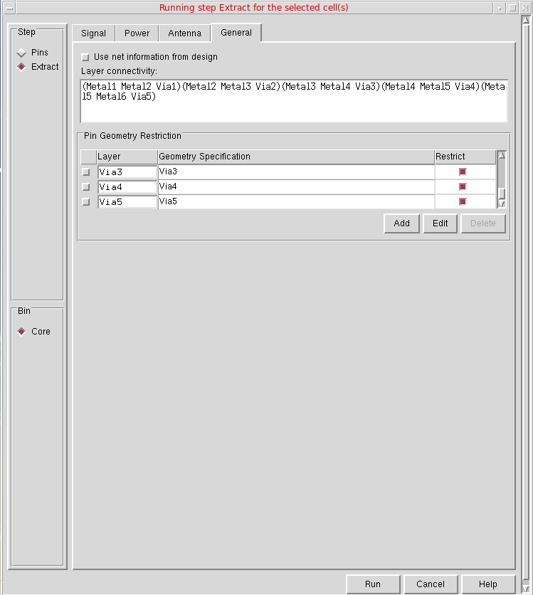
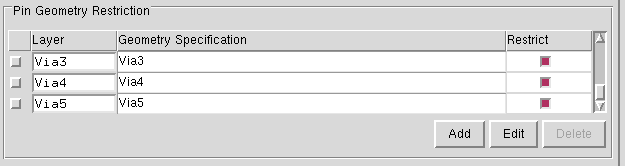

Specifying Connectivity Information in Designs
You can use the Running step Extract form to extract geometries on signal or power nets or to calculate process antenna information. You can specify connectivity information in a design using the General tab in the Running step Extract form.
To specify options in the General tab in the Running step Extract form:
-
Choose Flow – Extract and click the General tab.
 - Select Use net information from design if your design already contains connectivity information. If you select this option, Abstract Generator skips the extraction based on overlapping shapes and use the existing connectivity information in your design to create nets.
-
Use the Layer connectivity field to specify the connectivity between layers. This allows you to specify the layer connectivity without having to add via definitions in the technology file.
The Pin Geometry Restriction table provides you with finer control over final pin geometry.
 - From a list of all the layers specified in the technology file, select those that you want to assign for pin geometry.
- Enter the Geometry Specification for the regions where pins are either to be restricted to or avoided.
- Choose whether pins are to be allowed or avoided (Allow or Avoid) in the geometry specified in the Geometry Specification field. The specified geometry specification (G-spec) describes the region where pins are to be allowed or avoided.
-
In the Restrict column, select or deselect the button for adjusting pins and not for deleting the existing pins, which can slow down the performance of abstraction process. The red button indicates that the option is selected and the white button indicates that the option is not selected. To create the required pins, specify the geometry specification for the pin layers during the Extract step.
By default, the Restrict column is used for both signal and power pins. You can choose whether only signal or power pins are to be restricted to the specified region or avoided. To do this:-
Set the following Shell environment variable before starting the Virtuoso session:
setenv AllowAvoidSignalAndPowerPinsSeparately
-
Set the following options of the
absAbstractSKILL function to specify only power pins.absSetBinOption("Core" "AbstractAdjustAllowPowerPin" "(Metal1 (Metal1 andnot prBoundary boundary size -1)) ")
absSetBinOption("Core" "AbstractAdjustAvoidPowerPin" "(Metal2 (Metal2 andnot prBoundary boundary size -1)) ")
-
Set the following options of the
absAbstractSKILL function to specify only signal pins.absSetBinOption("Block" "AbstractAdjustAllowPin" "(Metal1 (Metal1 andnot prBoundary boundary size -0.05)) ")
absSetBinOption("Block" "AbstractAdjustAvoidPin" "(Metal1 (Metal1 andnot prBoundary boundary size -0.05)) ")
If theAllowAvoidSignalAndPowerPinsSeparatelyenvironment variable is not set, theAbstractAdjustAllowPinandAbstractAdjustAvoidPinoptions are used to specify both signal and power pins.
-
Set the following Shell environment variable before starting the Virtuoso session:
- Select the Add, Edit, and Delete buttons and the G-Spec Builder Form in conjunction with the operators to work with the Layer Assignment for Pin Geometry table.
Related Topics
Return to top